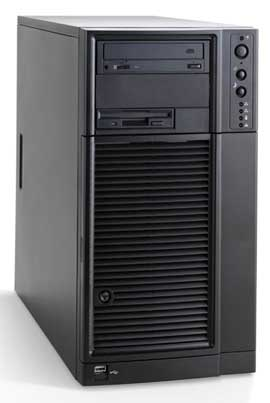
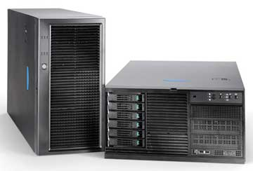

Александр Николов
Один из крупнейших игроков российского ИТ-рынка, компания R-Style Computers (http://www.r-style-computers.ru), на протяжении уже более десяти лет продвигает в массы свое серверное оборудование под торговой маркой Marshall. Системы с этим названием стали основой не одного крупного, всероссийского масштаба, проекта и хорошо известны заказчикам как производительные и относительно недорогие решения. Семейство R-Style Marshall нацелено на самый широкий круг потребителей и спектр бизнес-процессов, на одном конце которого находится решение типовых задач отделов и малых начинающих компаний, на другом - непрерывное функционирование корпоративных информационных систем индустриальных гигантов.
Компания R-Style Computers уделяет большое внимание процессам проектирования, сборки и тестирования всего оборудования, выходящего с ее производственных линий. Тщательный отбор проходят все компоненты сервера: на этапе конструирования все детали подвергаются испытаниям на предмет совместимости между собой, что позволяет выявить потенциальные аппаратные конфликты; при закупке компонентов у поставщиков проводится тестирование на наличие в партиях сбойных изделий, позволяющее отобрать наиболее надежных контрагентов, избежав тем самым производственного брака; на выходе из сборочного цеха сервер с целью выявления ненадежных машин подвергается многочасовому тестированию под нагрузкой, соответствующей реальным эксплуатационным показателям. Кроме того, стоит отметить, что производственный процесс организован в соответствии с требованиями стандарта ISO 9000, что может служить дополнительной гарантией качества серверных решений R-Style Computers.
Идеологически и функционально гамма продуктов под общим названием R-Style Marshall распадается на четыре основные группы, каждая из которых наилучшим образом подходит для определенного круга задач и нацелена на соответствующих потребителей. Каждой из них ниже мы уделим особое внимание.
Серверы напольного исполнения
К этой категории относятся простые недорогие системы, ориентированные на нужды малых предприятий или небольших отделов компаний. В определенном плане этот уровень можно рассматривать как первый шаг к построению информационной системы, позволяющий автоматизировать часть наиболее важных бизнес-процессов и выявить конкретные потребности предприятия в вычислительных ресурсах без неоправданных финансовых вложений. Модель начального уровня eNP 161, обладающую достаточной вычислительной мощностью и надежностью для работы с базами данных и приложениями средней сложности, R-Style Computers рекомендует в качестве первого сервера предприятия. Модели NP 246 и NP 247 благодаря высокой степени надежности и готовности к работе, а также возможности наращивать производительность по мере роста потребностей бизнеса, могут использоваться как файл-сервер, сервер баз данных и бизнес-приложений в динамично развивающихся компаниях.
|  | Сервер R-Style Marshall в напольном исполнении.
|
Все три сервера, входящие в серию (табл. 1), построены на базе шасси Intel SC5250-E (Pilot Point), что гарантирует высокое качество и надежность систем энергоснабжения и кондиционирования воздуха. В качестве видеоадаптера используется плата ATI Rage XL с 8 Мбайт видеопамяти. В распоряжении пользователей - два 5,25-дюйм отсека и один 3,5-дюйм, предназначенные для установки внешних устройств чтения/записи данных. Имеется также несколько внутренних отсеков для установки фиксированных жестких дисков (в конфигурации четыре Ultra320 LVD SCSI (68-pin) или четыре SATA-устройства) или жестких дисков с возможностью горячей замены (пять однодюймовых SCA-2 Ultra320 LVD SCSI или четыре SATA-устройства). Набор коннекторов для присоединения периферийного оборудования и коммуникационного взаимодействия состоит из трех USB-разъемов, последовательного порта, пары гнезд PS/2, графического интерфейса и двух разъемов RJ-45.
Таблица 1. Технические характеристики серверов R-Style в напольном исполнении
| Модель | eNP 161 | NP 246 | NP 247 |
| Процессор | Intel Pentium 4 | Intel Xeon DP | Intel Xeon DP |
| Число процессоров | 1 | До 2 | До 2 |
| Частота системной шины, МГц | 800/533/400 | 533/400 | 533/400 |
| Объем кэш-памяти L2, Кбайт | 1024 | 512 | 512 |
| Набор микросхем | Intel E7210 | Intel E7505 | Intel E7501 |
| Тип оперативной памяти | DDR266/400 ECC SDRAM | DDR266 ECC SDRAM | DDR266 ECC SDRAM |
| Объем оперативной памяти, Гбайт (число модулей) | 4 (4хDIMM) | 8 (4xDIMM) | 8 (4xDIMM) |
| Контроллеры накопителей: | |||
| SCSI | 1 канал U320/LVD | Нет | Нет |
| SATA | 2 канала Serial ATA, RAID 0,1 | 2 канала Serial ATA, RAID 0,1 | Нет |
| PATA | 2 канала EIDE (4 устройства) | 2 канала EIDE (4 устройства) | 2 канала EIDE (4 устройства) |
| Сетевые адаптеры | 1 x Intel PRO/100+ | 1 x Intel PRO/100+ | 2 x Intel PRO/100+ |
| 1 x Intel PRO/1000 | 1 x Intel PRO/1000 | 1 x Intel PRO/1000 | |
| Слоты расширения | 3 x 64-бит/66-МГц PCI-X | 2 x 64-бит/100-МГц PCI-X | 2 x 64-бит/100-МГц PCI-X |
| 1 x 64-бит/133-МГц PCI-X | 1 x 64-бит/133-МГц PCI-X | ||
| 1 x 32-бит/33-МГц PCI | 2 x 32-бит/33-МГц PCI | 2 x 32-бит/33-МГц PCI | |
| 1 x 8x AGP Pro | |||
В качестве рекомендованных ОС для этой категории серверов R-Style Computers предлагает платформы компании Microsoft - Windows 2000 Server и Windows Server 2003.
Универсальные серверы
Эта категория ориентирована на самый широкий круг пользователей - от корпоративных отделов и малых предприятий до средних компаний. Системы, представленные в ее рамках, обеспечивают надежное бесперебойное функционирование критически важных бизнес-процессов и вместе с тем позволяют растущим компаниям перейти от решения разрозненных задач к построению интегрированной информационной системы. Для управления коммуникациями масштаба рабочих групп и подразделения в качестве почтового сервера, сервера баз данных, файл-сервера или сервера приложений R-Style Computers предлагает модели NP 242 и NP 243, обладающие высокой надежностью за счет добавления избыточных компонентов. Модели NP 244 и NP 245 представляют собой серверы масштаба подразделения или малого предприятия и предназначены для работы с критически важными приложениями электронного бизнеса, требующими высокой степени готовности. Все они допускают установку двух процессоров Intel Xeon DP. Наконец, высокопроизводительная модель NP 451, обладающая широкими возможностями наращивания вычислительной мощности и гибкостью конфигурации ресурсов (в нее можно установить до четырех процессоров Intel Xeon MP), предназначена для поддержки бизнес-процессов (в частности, баз данных) предприятий среднего масштаба и отвечает потребностям сложных информационных систем.
|  | Универсальные серверы R-Style Marshall.
|
Несмотря на обширный список продуктов в этой категории (табл. 2), серверы во многом схожи между собой, что, впрочем, не слишком удивительно. Так, все они имеют три 5,25-дюйм и один 3,5-дюйм отсеки для установки внешних устройств. В качестве видеоадаптера используется плата ATI Rage XL с 8 Мбайт видеопамяти, установленная в слот PCI. Исключением стала модель NP 451 - в ней объем видеопамяти урезан до 4 Мбайт. Набор периферийных интерфейсов также, за исключением NP 451, совпадает: три гнезда USB, последовательный порт, два коннектора PS/2, видеовыход VGA и пара сетевых разъемов RJ-45. У старшей модели на один USB-разъем меньше, но зато до двух увеличено число последовательных портов. Аналогичная ситуация и с отсеками для внутренних жестких дисков: в младших моделях (NP 242, NP 243 и NP 244) можно использовать до пяти однодюймовых SCA-2 Ultra320 LVD SCSI жестких дисков с возможностью горячей замены, в старших (NP 245 и NP 451) - до десяти аналогичных устройств.
Таблица 2. Технические характеристики универсальных серверов R-Style
| Модель | NP 242 | NP 243 | NP 244 | NP 245 | NP 451 |
| Процессор | Intel Xeon DP | Intel Xeon DP | Intel Xeon DP | Intel Xeon DP | Intel Xeon MP |
| Число процессоров | До 2 | До 2 | До 2 | До 2 | До 4 |
| Частота системной шины, МГц | 533/400 | 533/400 | 533/400 | 533/400 | 400 |
| Объем кэш-памяти L2, Кбайт | 512 | 512 | 512 | 512 | 512 ( L3 - до 2 Мбайт) |
| Набор микросхем | Intel E7501 | Intel E7501 | Intel E7501 | Intel E7501 | ServerWorks Grand Champion HE |
| Тип оперативной памяти | DDR266 ECC SDRAM | DDR266 ECC SDRAM | DDR266 ECC SDRAM | DDR266 ECC SDRAM | DDR266 ECC SDRAM |
| Объем оперативной памяти, Гбайт (число модулей) | 8 (4xDIMM) | 8 (4xDIMM) | 12 (6xDIMM) | 12 (6xDIMM) | 24 (12xDIMM) |
| Контроллеры накопителей | |||||
| SCSI | 1 канал U320/LVD, RAID 0, 1 |
1 канал U320/LVD, RAID 0, 1 |
2 канала U320/LVD, RAID 0, 1 |
2 канала U320/LVD, RAID 0, 1 |
2 канала U320/LVD, RAID 0, 1 |
| SATA | Нет | Нет | Нет | Нет | Нет |
| PATA | 2 канала EIDE (4 устройства) | 2 канала EIDE (4 устройства) | 2 канала EIDE (4 устройства) | 2 канала EIDE (4 устройства) | 1 канал EIDE (2 устройства) |
| Сетевые адаптеры | 2 x Intel PRO/100+ | 2 x Intel PRO/100+ | 1 x Intel PRO/100+ | ||
| 1 x Intel PRO/1000 | 1 x Intel PRO/1000 | 2 x Intel PRO/1000 Server Adapter | 2 x Intel PRO/1000 Server Adapter | 1 x Intel PRO/1000 | |
| Слоты расширения | 4 x 64-бит/100-МГц PCI-X | 4 x 64-бит/100-МГц PCI-X | 2 x 64-бит/100-МГц PCI-X | 2 x 64-бит/100-МГц PCI-X | 4 x 64-бит/100-МГц PCI-X, с горячей заменой |
| 1 x 64-бит/133-МГц PCI-X | 1 x 64-бит/133-МГц PCI-X | 2 x 64-бит/100-МГц PCI-X | |||
| 2 x 32-бит/33-МГц PCI | 2 x 32-бит/33-МГц PCI | 3 x 32-бит/33-МГц PCI | 3 x 32-бит/33-МГц PCI | 2 x 32-бит/33-МГц PCI | |
| Система питания | 450 Вт с режимом коррекции | 2 x 450 Вт (1 основной + 1 резервный) с режимом коррекции, двойной кабель питания | 2 x 450 Вт (1 основной + 1 резервный) с режимом коррекции, двойной кабель питания | 3 x 350 Вт (2 основных + 1 резервный) с режимом коррекции, двойной кабель питания | 3 x 600 Вт (2 основных + 1 резервный) с режимом коррекции, три кабеля питания |
В ноябре 2004 г. компания выпустила на рынок двухпроцессорные серверы на базе новейших процессоров Intel Xeon с 800-МГц системной шиной, кэш-памятью 1 Мбайт и поддержкой технологии Intel Extended Memory 64 (EM64T), которые в сочетании с новыми и усовершенствованными технологиями обеспечивают 30%-ный прирост производительности при той же стоимости. Две модели, NP 281 и NP 282, представляют собой чисто пьедестальные системы, а серверы NP 284, NP 285 и NP 286 - универсальные решения, пригодные как для напольной установки, так и для монтажа в 19-дюйм стойку.
В новых системах увеличено число отсеков для установки жестких дисков: в частности, в базовой конфигурации все модели позволяют установить до шести фиксированных дисков SCSI, SATA или IDE. Позже универсальные модели можно дополнить еще четырьмя аналогичными устройствами, а вот напольные модели на это не рассчитаны. В качестве дополнения и те и другие готовы принять до шести дисков SCSI или SATA с горячей заменой. Серверы NP 284, NP 285 и NP 286 позволяют установить в отсеки для внешних накопителей до трех 5,25-дюйм устройств, модели NP 281 и NP 282 - пару 5,25-дюйм приводов и одно 3,5-дюйм устройство. Подробности о новых моделях можно найти в табл. 3.
Отметим, что, как и в случае предыдущей серии, все модели этой категории ориентированы на работу с ОС компании Microsoft.
Таблица 3. Технические характеристики универсальных серверов (модели 2004 г.)
Таблица здесьСерверы для размещения в стойку
Модели для монтажа в стойку - наиболее обширная и многогранная категория серверного оборудования компании R-Style Computers, перекрывающая потребности в вычислительных мощностях всего спектра предприятий, от малых компаний до транснациональных гигантов. Идеологически включает в себя решения, относящиеся к предыдущим группам, однако, в отличие от них, ориентирована на предприятия с уже сложившейся и четко определенной структурой корпоративной информационной системы.
Начальный уровень представлен системами на базе процессора Intel Pentium 4. К ним относятся две модели высотой 4U, предназначенных для установки в стандартную 19-дюйм стойку: недорогая eNP 161r, которая может использоваться в инфраструктурах Интернет-провайдеров в качестве сервера Web-хостинга, а также на малых предприятиях и в рабочих группах в качестве сервера приложений, файл- или принт-сервера, и модель eNP 162r, способная играть роль сервера приложений, файл-сервера, принт-сервера малого предприятия или рабочей группы.
Средний уровень - системы на процессоре Intel Xeon. В эту категорию входит модель NP 243r, предназначенная для работы с приложениями повышенной сложности, требующими отказоустойчивости и высокой производительности, модель NP 244r, нацеленная на задачи, где требуется высокоплотное размещение вычислительной мощности (построение распределенных вычислительных систем, реализация различных Интернет-служб), и модель NP 451r - высокопроизводительный и отказоустойчивый сервер, обладающий хорошей масштабируемостью и повышенной надежностью, оптимально подходящий для роли сервера электронной коммерции, коммуникационного сервера или сервера транзакций, обслуживающего критически важные задачи.
Высший уровень - поставляемые под конкретный проект системы на базе процессора Intel Itanium 2. Здесь представлены две модели. Первая - сервер масштаба предприятия EP 272r, представляющий собой новое поколение тонких серверов, предназначенных для работы с внешними дисковыми массивами и построения высокопроизводительных кластеров для обработки критически важных бизнес-приложений в режиме 24 часа в сутки, 7 дней в неделю. Вторая модель, сервер EP 471r, предназначена для реализации проектов корпоративного уровня, научных приложений и технических расчетов любой степени сложности, работы ресурсоемких баз данных, требующих непрерывности, высокой производительности и вычислительной мощности.
Платформы серверов, входящих в категорию стоечных (табл. 4), пожалуй, наиболее разнообразны во всей гамме продуктов компании R-Style Computers, однако и здесь можно выделить некоторые закономерности - например, отсутствие в большинстве моделей отсеков для внешних накопителей (исключение составили eNP 161r с парой сверхтонких отсеков для флоппи-дисковода и привода компакт-дисков; eNP 162r с тремя 5,25-дюйм и двумя 3,5-дюйм отсеками; NP 451r с одним 5,25-дюйм и одним 3,5-дюйм отсеками) или использование графического адаптера ATI Rage XL с 8-Мбайт видеопамяти, практически ставшего негласным стандартом (исключение - опять же модель NP 451r с урезанной до 4 Мбайт видеопамятью).
Таблица 4. Технические характеристики серверов R-Style для монтажа в стойку
Вполне логичным выглядит тот факт, что для старших моделей этого сектора - корпоративных систем EP 272r и EP 471r, построенных на базе процессора Intel Itanium 2, - компания R-Style Computers сертифицировала не только ОС Microsoft из семейства Windows Server, но и ряд дистрибутивов Linux, в частности 64-разрядные продукты семейства Red Hat и Novell SuSe.
Обновление моделей затронуло и этот сектор: как ожидается, в первой четверти 2005 г. компания представит на рынок две новые модели, рассчитанные на размещение в 19-дюйм стойку, - NP 281r и NP 282r на базе процессоров Intel Xeon с 800-МГц системной шиной, кэш-памятью 1 Мбайт и поддержкой технологии EM64T.
Серверы построены на базе набора системных микросхем Intel E7520, и в них можно использовать до двух процессоров совместно с широким набором оперативной памяти - от модулей Registered ECC DDR266 общим объемом до 24 Гбайт или Registered ECC DDR333 (до 16 Гбайт) до Registered ECC DDR2 400 общим объемом до 16 Гбайт, устанавливаемой в шесть гнезд. Графический адаптер ATI Rage XL с 8 Мбайт видеопамяти на борту установлен в PCI-слот. Имеется пара Ethernet-адаптеров Intel PRO/1000 и набор интерфейсов для периферии: три USB-разъема (два на задней панели, один на передней), внутренний последовательный порт с разъемом DH10 и пара коннекторов PS/2.
Дисковая подсистема состоит из двухканального адаптера PATA на четыре IDE-устройства и двухканального адаптера SATA на два устройства с поддержкой RAID-массивов уровня 0 и 1. Кроме того, доступен адаптер интерфейса U320/LVD на два канала, обеспечивающий уровень RAID 0 и RAID 1. Младшая модель, в корпусе высотой 1U, имеет три отсека для установки жестких дисков с возможностью горячей замены; старшая, с высотой корпуса 2U, - шесть таких отсеков. Вместе с тем в обеих моделях можно установить внутрь до трех фиксированных SATA-дисков. В качестве внешних накопителей используются тонкий привод для 3,5-дюйм дискет, привод компакт-дисков или комбинированный накопитель DVD/CD-RW. В дополнение к низкопрофильному PCI-X и полноразмерным PCI-X или PCI-E разъемам, присутствующим у NP 281r, NP 282r имеет одно полноразмерное активное гнездо PCI-X. Система питания в первом случае состоит из одного блока питания мощностью 500 Вт, во втором - из пары блоков по 700 Вт.
В качестве рекомендованных производитель указывает для этих моделей ОС Microsoft Windows 2000 Server и Microsoft Windows Server 2003.
Модульные системы
Особняком в линейке серверов R-Style стоит модульная система, рассчитанная прежде всего на крупных заказчиков, решающих задачи обработки гигантских массивов информации с использованием высокопроизводительных кластерных систем. Основой этого решения служит высокоинтегрированная серверная платформа R-Style Marshall StormBlade NP2841r, позволяющая объединить в одном шасси высотой 7U до 14 серверов, выполняющих различные задачи или согласованно единую.
В систему можно установить один или два дублирующих друг друга модуля управления с возможностью горячей замены, обеспечивающих внешние интерфейсы: VGA, USB, PS/2 для клавиатуры и мыши и 10/100 Мбит/с Ethernet. В качестве дополнения доступен коммутатор Gigabit Ethernet (один или два с возможностью горячей замены) с 14 внутренними портами 1000 BaseT и четырьмя внешними портами 10/100/1000 BaseT или коммутатор Fibre Channel (один или два с возможностью горячей замены) с парой внутренних портов и четырьмя внешними. Шасси оснащено 3,5-дюйм накопителем для гибких дисков и приводом CD-ROM 48Х. Система питания состоит из четырех блоков питания мощностью по 1800 Вт с коррекцией коэффициента мощности и с резервированием по формуле 1+1 и 1+1. В систему охлаждения входят два вентилятора горячей замены с изменяемой скоростью вращения.
В качестве модулей в системе используются NP241BL - сервер высотой 1U, ориентированный на работу в качестве сервера DNS, сервера балансировки нагрузки, прокси-сервера, а также для поддержки Web-серверов, и NP451BL - сервер высотой 4U, рассчитанный на организацию почтовых служб, служб терминального обслуживания тонких клиентов и работу с базами данных в больших и средних компаниях. Оба устройства (табл. 5) подключаются к объединительной панели внутри шасси. Графическая подсистема построена на видеоадаптере SVGA PCI ATI Rage XL с 8 Мбайт видеопамяти. Собственная дисковая подсистема в обоих случаях состоит из одноканального интерфейса ATA 100 на два устройства (жесткий диск со скоростью вращения шпинделя 5400 об./мин емкостью 40 Гбайт), обеспечивающего поддержку RAID-массивов уровня 0 и 1, и SCSI-адаптера LSI Logic Ultra320 SCSI с поддержкой RAID 1, поставляемого опционально с модулем расширения дискового пространства (подключается к каждому серверу и занимает дополнительное посадочное место в шасси), рассчитанным на установку до двух дисков. Серверы имеют доступ к внешним интерфейсам (через встроенный KVM-коммутатор) и накопителям, обеспечиваемым модулями управления R-Style Marshall StormBlade NP2841r, а, кроме того, используют его систему питания и охлаждения.
Таблица 5. Технические характеристики блейд-серверов R-Style
| Модель | NP241BL | NP451BL |
| Процессор | Intel Xeon DP | Intel Xeon MP |
| Кэш-память L2, Кбайт | 512 | 512 (L3 - до 2 Мбайт) |
| Частота системной шины, МГц | 533/400 | 400 |
| Платформа | Intel Server Compute Blade SBXL52 | Intel Server Compute Blade SBX44 |
| Набор микросхем | Server Works Grand Champion LE | Intel Server Compute Blade SBX44 |
| Тип оперативной памяти | DDR266 ECC SDRAM | DDR266 ECC SDRAM |
| Объем оперативной памяти, Гбайт (число модулей) | 4 (4xDIMM) | 8 (8xDIMM) |
| Сетевой контроллер | 2 x Intel Gigabit Ethernet | 4 x Intel Gigabit Ethernet |
| Разъемы ввода-вывода | 1 x 64-бит/100-МГц PCI-X (для подключения адаптера Fibre Channel предоставляет 2 порта) | Нет |
Все компоненты платформы R-Style Computers сертифицированы на совместимость с ОС Microsoft Windows 2000 Server, Microsoft Windows Server 2003 (Standard и Enterprise Edition).
* * *
R-Style Computers - одна из немногих российских компаний, предлагающих потребителю полный спектр серверного оборудования. В ее модельных рядах присутствуют недорогие системы на базе процессоров Intel Pentium 4, высокопроизводительные серверы с процессорами Intel Xeon DP и MP, в том числе блейд-серверы, и сверхмощные решения на базе Intel Itanium 2, поставщиков которых во всем мире можно пересчитать по пальцам. Подобная широта номенклатуры, особое внимание к проектированию и производственному процессу и гибкая ценовая политика позволили R-Style Computers завоевать признание рынка - компания входит в пятерку крупнейших отечественных производителей серверных систем.